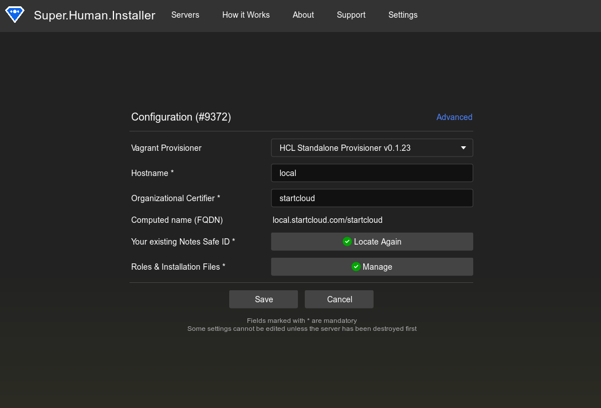
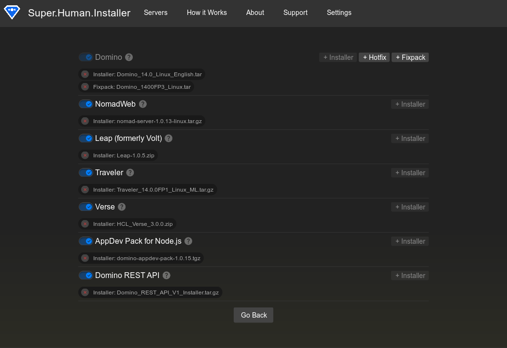

Super.Human.Installer
Super.Human.Installer helps you install the latest and greatest HCL Domino technologies easily.
How to create a server?
How to use a server?
Download
What is Super.Human.Installer?
Super.Human.Installer is a part of the Genesis.Directory App Catalog, where you can deploy and update your open source applications with just one line.
Click here to find out moreSuper.Human.Installer is open source software (OSS). Open source software is software that is distributed with its source code, making it available for use, modification, and distribution with its original rights.
Source Code on GitHubWhy do you need it?
Super.Human.Installer lets you save massive amounts of time. First, it creates an HCL Domino 12.0.2 server on your desktop computer running macOS, Windows, or even Linux. The server can be preconfigured with HCL technologies like Nomad Web, Traveler, Leap, AppDev, or REST API (formerly KEEP). Then, it gives you easy access to the Genesis App Catalog, where you can install a broad array of software from OpenNTF, Prominic, HelpSoft, Vigilus CRM, and other commercial vendors with just one simple console command.
This is the power of DevOps
DevOps is a software development methodology that emphasizes collaboration and communication between development teams and operations teams, with the goal of releasing software more quickly, reliably, and efficiently. DevOps combines elements of software development, quality assurance, and IT operations, and involves the use of automation tools and agile practices to streamline the software delivery process.
A dedicated app catalog or app marketplace can serve as a secure and centralized platform for users to discover and download new apps, making it easier for users to find and try new software.
How to use it?
Super.Human.Installer leverages the
VirtualBox
virtual machine manager and the
Vagrant
DevOps
software automation tool to create a Linux based VM on your local computer. There will be one for each
Domino
server you create.
You should only run 1-2 at a time, depending upon your computer's resources. You can define as many as you like, and in each one you can experiment with different configurations and
Genesis.Directory
add-ons -- or your own development ideas!
The specific steps which are followed based upon the user interface presented by the Super.Human.Installer application are written to a configuration file called a
YAML
file. This YAML file provides instructions to Vagrant such as which version of Domino to install and whether to include additional features like Nomad Web and Node.js development using the AppDev Pack.
The actual control files and scripts can be inspected by you by clicking the Open Server Directory button on any of the existing server instances.
- Download and install Super.Human.Installer for your operating system. Launch the app.
- Click the Create New Server button.
- Provide the hostname and the organization name. The computer name will be populated automatically. Make sure it's correct.
- Export SAFE.IDS from your HCL Notes client and locate it using a button. 
- Click on the Manage button. Here you can provide all HCL technologies you want to have on your server.
- HCL technologies can be downloaded from the official HCL FlexNet webpage.
- At minimum, you need to provide HCL Notes archive (to be installed on a Linux server). Click on the +Installer button and locate .tar archive. You can also include a hotfix and a fixpack.
- Then you can configure other technologies. First, enable the switch next to the technology you want to include. The installer button will be enabled. Click on it and locate the necessary installer. 